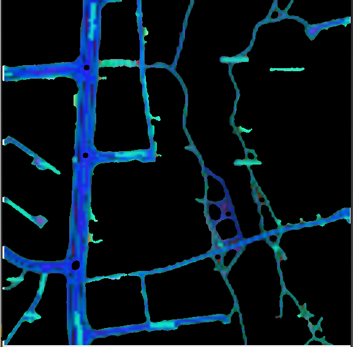
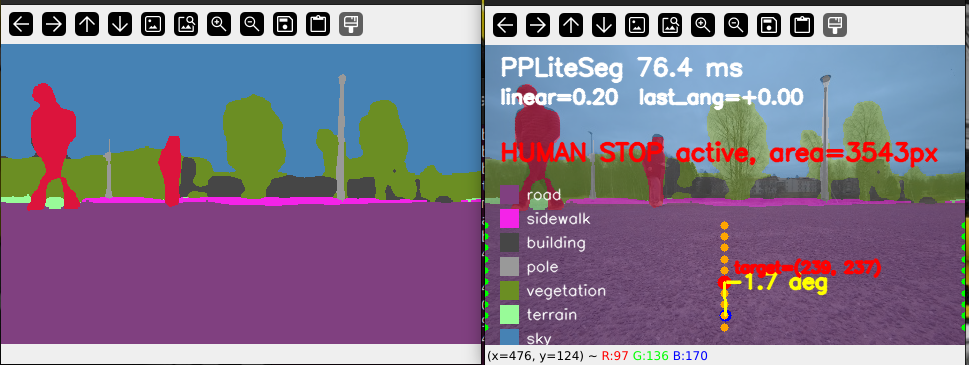

Point a camera at the code to open the Previous Projects portfolio on any device — the QR always points at this exact page.
Four robotics and autonomy projects, each told in three slides — the challenge we set out to solve, the methods we built, and the results we measured. From an indoor rescue robot to full-stack outdoor navigation from a satellite image.
A robot for rescue missions that maps its surroundings and threads through small openings — navigating autonomously using only a 3D LiDAR.
Benchmarking A*, Dijkstra and RRT for autonomous navigation of mobile robots, to replace manual control of CERN's radiation-survey robots.
A cooperative-perception layer that bridges a ceiling-mounted crane LiDAR to an autonomous mobile robot, giving it active human detection in its near-field blind zone.
An outdoor autonomy stack that drives a UGV ~250 m between two points clicked on a satellite image — staying on the road, stopping for people, avoiding obstacles, with no premade map.

